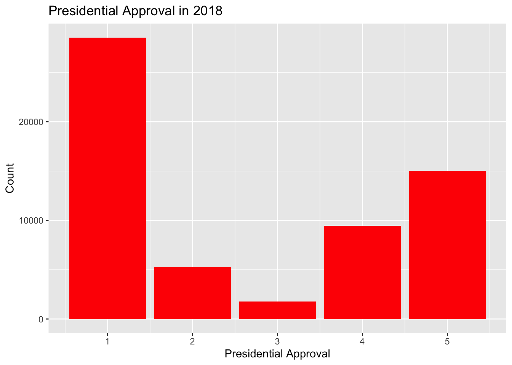
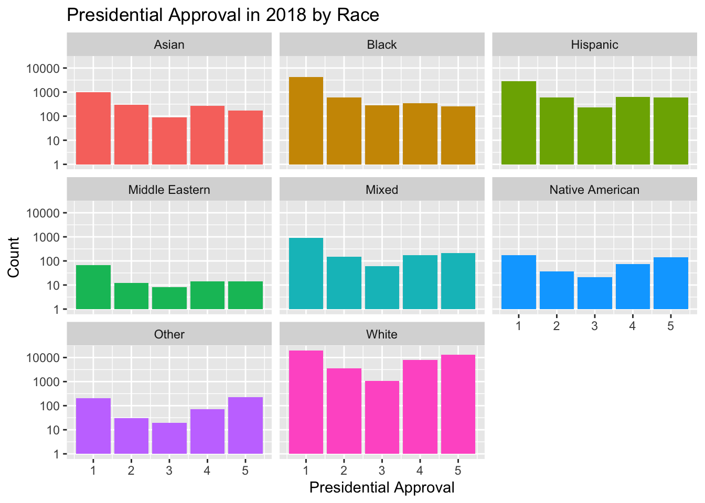
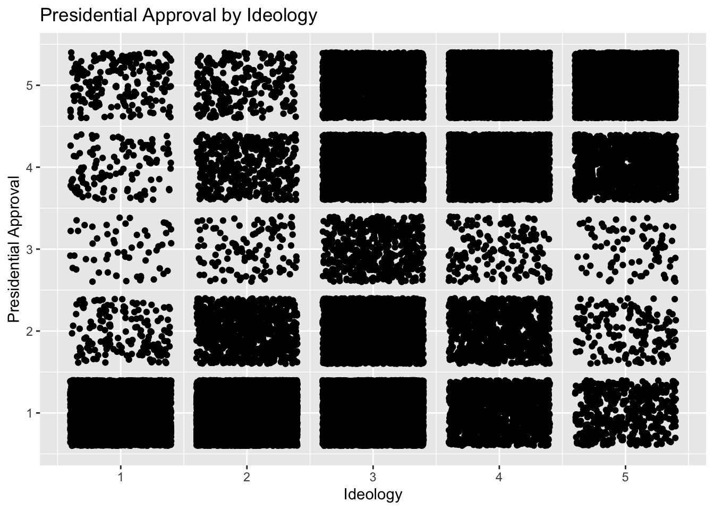

Chapter 11 Discrete Response
Binary responses take on only two values: success (\(Y=1\)) or failure (\(Y=0\)), yes (\(Y=1\)) or no (\(Y=0\)), et cetera. Binary responses are one of the most common types of data that statisticians encounter. We are often interested in modeling the probability of success, \(p\), based on a set of covariates. As with regression, there are two broad categories of problems: modeling for prediction and modeling for causation. Although terminology varies across fields, “regression” is generally used for situations in which our dependent variable is continuous, as in Chapter 10. “Classification” applies to cases in which the dependent variable takes on discrete values, the simplest of which is the binary case.
In this chapter, we will look at three common techniques of classification of binary data. First, we will consider logistic regression, which is similar conceptually to the linear regression models we considered in Chapters ?? and 10. Second, we will consider classification and regression trees (CART). Third, we will discuss random forests. We use the tidymodels tools for all examples.
11.1 Exploratory Data Analysis (EDA)
Begin with our usual libraries:
Before we start modeling, let’s perform some exploratory analysis on the dataset we’ll be working with, cces. Cces stands for the Cooperative Congressional Election Study, a study regarding the approval rating of individual voters to their sitting president. Each row captures one voter, some of their demographic information, and how highly they approve (or disaprprove) of the president. We will tweak the data by only looking at observations recorded in the year 2018 so that all the responses are about the same president.
Let’s first look at the raw data values by either looking at cces_ch12 using RStudio’s spreadsheet viewer or by using the glimpse() function from the dplyr package:
## Rows: 60,000
## Columns: 12
## $ year <int> 2018, 2018, 2018, 2018, 2018, 2018, 2018, 2018, 2018, 201…
## $ state <chr> "Texas", "Ohio", "Kentucky", "Arizona", "Pennsylvania", "…
## $ gender <chr> "Female", "Female", "Female", "Female", "Female", "Male",…
## $ age <int> 45, 58, 66, 88, 59, 71, 86, 80, 45, 60, 55, 66, 85, 51, 6…
## $ race <chr> "Black", "White", "White", "White", "White", "White", "Wh…
## $ marstat <chr> "Separated", "Married", "Divorced", "Widowed", "Divorced"…
## $ ideology <fct> Not Sure, Conservative, Liberal, Moderate, Liberal, Very …
## $ education <fct> Some College, Post-Grad, Post-Grad, High School Graduate,…
## $ news <chr> "Don't Know", "Only Now And Then", "Most Of The Time", "S…
## $ econ <chr> "Gotten Much Worse", "Stayed About The Same", "Stayed Abo…
## $ approval_ch <chr> "Disapprove / Somewhat Disapprove", "Approve / Somewhat A…
## $ approval <dbl> 2, 4, 1, 4, 2, 5, 5, 4, 5, 1, 5, 1, 5, 1, 1, 4, 1, 5, 1, …From this, we can gather that there are 16 variables. Notably, there are 60,000 observations even after filtering only for the year 2018.
Let’s also display a random sample of 5 rows of the 60,000 rows. We will be displaying these 5 random observations using a gt() table. Before that, though, we will select the variables that are currently of interest to us.
cces_ch12 <- cces_ch12 %>%
select(state, age, gender, race, education, ideology, approval)
cces_ch12 %>%
sample_n(size = 5)cces_ch12 %>%
sample_n(5) %>%
gt() %>%
cols_label(
state = md("State"),
age = md("Age"),
gender = md("Gender"),
race = md("Race"),
education = md("Education"),
ideology = md("Ideology"),
approval = md("Approval of President")) %>%
tab_source_note(md("A random sample of 5 out of the 60,000 voters"))| year | State | Gender | Age | Race | marstat | Ideology | Education | news | econ | approval_ch | Approval of President |
|---|---|---|---|---|---|---|---|---|---|---|---|
| 2018 | Georgia | Female | 24 | Hispanic | Single / Never Married | Conservative | 4-Year | Some Of The Time | Gotten Worse / Somewhat Worse | Strongly Disapprove | 1 |
| 2018 | North Carolina | Female | 61 | White | Divorced | Conservative | Post-Grad | Most Of The Time | Gotten Much Better | Strongly Approve | 5 |
| 2018 | Texas | Female | 25 | Mixed | Single / Never Married | Very Liberal | Some College | Most Of The Time | Stayed About The Same | Strongly Disapprove | 1 |
| 2018 | Texas | Female | 83 | White | Widowed | Very Conservative | High School Graduate | Most Of The Time | Gotten Much Better | Strongly Approve | 5 |
| 2018 | Indiana | Female | 74 | White | Married | Conservative | High School Graduate | Some Of The Time | Stayed About The Same | Approve / Somewhat Approve | 4 |
| A random sample of 5 out of the 60,000 voters | |||||||||||
Now that we’ve looked at the raw values in cces_ch12 and have a sense of the data, let’s compute summary statistics. Let’s use the skim() function from the skimr package.
| Name | Piped data |
| Number of rows | 60000 |
| Number of columns | 12 |
| _______________________ | |
| Column type frequency: | |
| character | 7 |
| factor | 2 |
| numeric | 3 |
| ________________________ | |
| Group variables | None |
Variable type: character
| skim_variable | n_missing | complete_rate | min | max | empty | n_unique | whitespace |
|---|---|---|---|---|---|---|---|
| state | 0 | 1.00 | 4 | 20 | 0 | 51 | 0 |
| gender | 0 | 1.00 | 4 | 6 | 0 | 2 | 0 |
| race | 0 | 1.00 | 5 | 15 | 0 | 8 | 0 |
| marstat | 22 | 1.00 | 7 | 22 | 0 | 6 | 0 |
| news | 385 | 0.99 | 10 | 17 | 0 | 5 | 0 |
| econ | 82 | 1.00 | 8 | 31 | 0 | 6 | 0 |
| approval_ch | 33 | 1.00 | 16 | 32 | 0 | 5 | 0 |
Variable type: factor
| skim_variable | n_missing | complete_rate | ordered | n_unique | top_counts |
|---|---|---|---|---|---|
| ideology | 419 | 0.99 | FALSE | 6 | Mod: 17302, Con: 12052, Lib: 10929, Ver: 7434 |
| education | 0 | 1.00 | FALSE | 6 | Hig: 16617, 4-Y: 14256, Som: 12631, Pos: 8316 |
Variable type: numeric
| skim_variable | n_missing | complete_rate | mean | sd | p0 | p25 | p50 | p75 | p100 | hist |
|---|---|---|---|---|---|---|---|---|---|---|
| year | 0 | 1 | 2018.0 | 0.0 | 2018 | 2018 | 2018 | 2018 | 2018 | ▁▁▇▁▁ |
| age | 0 | 1 | 48.1 | 17.8 | 18 | 32 | 48 | 62 | 95 | ▇▇▇▅▁ |
| approval | 33 | 1 | 2.6 | 1.7 | 1 | 1 | 2 | 5 | 5 | ▇▂▁▂▅ |
You’ll notice that we are missing data for our ideology and approval variables. The complete_rate column tells us that approval has 3% missing observations and ideology has 0.7% missing observations.
To complete our exploratory data analysis, let’s create some data visualizations.
The primary response variable left in our dataset is approval, a numeric variable from 1-5 with 5 representing the highest approval of the president. So, let’s start by looking at the overall distribution of approval.
cces_ch12 %>%
filter(is.na(approval) == FALSE) %>% #Removing NA observations
ggplot(aes(x = approval)) +
geom_bar(fill = "red") +
labs(y = "Count",
x = "Presidential Approval",
title = "Presidential Approval in 2018") 
According to this graph, the approval of the president in 2018 is very polarized: the peaks are at 1 and 5 and no one reported with a neutral 3. There seems to be more disapproval overall. To make things more interesting, let’s facet this approval variable by gender and then race.
cces_ch12 %>%
filter(is.na(approval) == FALSE) %>%
ggplot(aes(x = approval, fill = gender)) +
geom_bar() +
labs(y = "Count",
x = "Presidential Approval",
title = "Presidential Approval in 2018 by Gender") +
facet_wrap(~ gender) +
theme(legend.position = "none")
The bimodal, polarized distribution holds across both genders. However, it seems that females have more higher rates of disapproval (more 1s and 2s).
cces_ch12 %>%
filter(is.na(approval) == FALSE) %>%
ggplot(aes(x = approval, fill = race)) +
geom_bar() +
labs(y = "Count",
x = "Presidential Approval",
title = "Presidential Approval in 2018 by Race") +
facet_wrap(~ race) +
theme(legend.position = "none") +
scale_y_log10()
Note the log10 scale on the y-axis; this was done so that we can see clearly the distribution for races that have very few observations compared to white individuals. We can see here that the bimodel distribution is present across all races, with slight variations from race to race.
Now, let’s take a look at our ideology variable. ideology has values “Very Liberal”, “Liberal”, “Moderate”, “Conservative”, “Very Conservative”, and “Not Sure”. Let’s make these variables numeric so that they are easier to work with by recoding them to 1, 2, 3, 4, 5, and NA, respectively.
cces_ch12 <- cces_ch12 %>%
mutate(ideology = case_when(
ideology == "Very Liberal" ~ 1,
ideology == "Liberal" ~ 2,
ideology == "Moderate" ~ 3,
ideology == "Conservative" ~ 4,
ideology == "Very Conservative" ~ 5,
ideology == "Not Sure" ~ NA_real_))Now that we have ideology as a numeric variable, we will make a barplot to get a sense of the distribution.
cces_ch12 %>%
filter(is.na(ideology) == FALSE) %>%
ggplot(aes(x = ideology)) +
geom_bar(fill = "blue") +
labs(y = "Ideology",
title = "Ideology in CCES 2018")
There is a unimodal disitribution in ideology, with most respondents being moderate. This is interesting, considering how polarized the presidential approval was before. Let’s create a jitterplot between ideology and approval to look into this more.
cces_ch12 %>%
filter(is.na(ideology) == FALSE) %>%
filter(is.na(approval) == FALSE) %>%
ggplot(aes(x = ideology, y = approval)) +
geom_jitter() +
labs(y = "Presidential Approval",
x = "Ideology",
title = "Presidential Approval by Ideology")
11.2 Logistic regression
11.2.1 What is logistic regression?
Now that we know our dataset a little better, let’s begin our first way of modelling binary/discrete data: logistic regressions.
Figure 11.1 illustrates a data set with a binary (0 or 1) response (\(Y\)) and a single continuous predictor (\(X\)). The blue line is a linear regression to model the probability of a success (\(Y=1\)) for a given value of \(X\). With a binary response, the linear regression has an obvious problem: it can produce predicted probabilities below 0 and above 1. Probabilities can only range from 0 up to and including 1 as these represent a 0% and 100% chance of an event happening, respectively.
The red curve is the logistic regression curve. Note that its characteristic “S” shape always produces predicted probabilities between 0 and 1. Here is the formula for a logistic regression:
Where \(p\) is the probability of a “yes” or “success” for a given set of predictors \(X\).
FIGURE 11.1: Linear vs. logistic regression models for binary response data.

The mathematical function \(log\left(\frac{p}{1 - p}\right)\) is called the logit function and it transforms variables from the space \((0, 1)\) (like probabilities) to \((-\infty, \infty)\). The inverse of that function, the standard logistic function, is \(\frac{1}{1 + e^{-x}}\) and transforms variables from the space \((-\infty, \infty)\) to \((0, 1)\). From that latter function’s name we get the terminology of logistic regression.
11.2.2 One categorical explanatory variable
Let’s start our modeling by predicting approval with a single categorical explanatory variable. However, there’s one problem: approval is not a binary variable and, therefore, this wouldn’t be a logistic regression. In order to make this a logistic regression, we have to turn approval into a binary variable. 1-2 will be coded to 0 to signify disapproval and 3-5 will be coded to 1 for approval.
cces_ch12 <- cces_ch12 %>%
mutate(approval = case_when(
approval == 1 ~ 0,
approval == 2 ~ 0,
approval == 3 ~ 1,
approval == 4 ~ 1,
approval == 5 ~ 1))We’ll start by modeling our new binary approval with the categorical variable race. As we’ll see, the syntax for running a logistic regression in R is very similar to that for running a linear regression. In fact, we’ll follow the same basic steps:
- We first “fit” the logistic regression model using the
glm(y ~ x, family, data)function and save it inrace_model. - We get the regression table by applying the
tidy()function from the broom package torace_model. We’ll print theterm,estimate,conf.low, andconf.highcolumns.
Note that the key difference is that instead of using lm(), we are now using glm(). glm() operates very similarly to lm(), but it has an additional argument: family. To run a logistic regression, we use family = binomial. This means that it will be modelled along the red line in Figure 11.1 rather than the blue line.
Next, let’s fit a model and tidy() it:
race_model <- glm(approval ~ race, family = binomial, data = cces_ch12)
race_model %>%
tidy(conf.int = TRUE) %>%
select(term, estimate, conf.low, conf.high)| term | estimate |
|---|---|
| (Intercept) | -0.875 |
| raceBlack | -0.810 |
| raceHispanic | 0.020 |
| raceMiddle Eastern | 0.076 |
| raceMixed | 0.034 |
| raceNative American | 1.010 |
| raceOther | 1.179 |
| raceWhite | 0.857 |
How can we interpret the coefficients? Unlike linear regressions, these coefficients aren’t directly interpretable. Recall our logistic regression model equation:
\[ \log\left(\frac{p}{1 - p}\right)=\beta_0+\beta_1X \]
A one-unit change in \(X\) thus is associated with a one-unit change in \(log\left(\frac{p}{1 - p}\right)\), where \(p\) is the predicted probability of success. It is hard to understand intuitively what this means. We can directly calculate all the possible values of \(p\) this model by using the standard logistic function:
\[ p = \frac{1}{1 + e^{-(\beta_0+\beta_1X)}} \]
We can first use this formula to fill \(b_0\) with the intercept (representing Asians) and omit the \(b_1\) as we are solving for the probability of an Asian American approving of the President.
\[ p_{pres\_approve} = \frac{1}{1 + e^{-(-1.06)}} = 0.257 \]
We can then fill in the \(b_1\) term to calculate the probabilities of all races: - White: \(\frac{1}{1 + e^{-(-1.06 + 0.99)}} = 0.482\) - Black: \(\frac{1}{1 + e^{-(-1.06-1.01)}} = 0.112\) - Hispanic: \(\frac{1}{1 + e^{-(-1.06 + 0.036)}} = 0.264\) - Middle Eastern: \(\frac{1}{1 + e^{-(-1.06 + 0.007)}} = 0.259\) - Native American: \(\frac{1}{1 + e^{-(-1.06 + 1.1)}} = 0.51\) - Mixed: \(\frac{1}{1 + e^{-(-1.06 + 0.071)}} = 0.271\) - Other: \(\frac{1}{1 + e^{-(-1.06 + 1.3)}} = 0.559\)
However, there is a way to calculate these predicted probabilities using R without doing all of the math of the standard logistic function..
We have previously defined the following three concepts for a linear regression:
- Observed values \(y\), or the observed value of the outcome variable
- Fitted values \(\hat{y}\), or the value on the regression line for a given \(x\) value
- Residuals \(y - \hat{y}\), or the error between the observed value and the fitted value
We obtained these values and other values using the augment() function from the broom package. Recall too that we used the .se.fit column to construct confidence intervals. We’ll see here how we can apply these same concepts to logistic regression.
regression_points <- race_model %>%
augment() %>%
mutate(conf.low = .fitted - 2 * .cooksd,
conf.high = .fitted + 2 * .cooksd) %>%
select(approval, race, .fitted, conf.low, conf.high, .resid)
regression_points| approval | race | .fitted | conf.low | conf.high | .resid |
|---|---|---|---|---|---|
| 0 | Black | -1.685 | -1.685 | -1.685 | -0.58 |
| 1 | White | -0.018 | -0.018 | -0.018 | 1.18 |
| 0 | White | -0.018 | -0.018 | -0.018 | -1.17 |
| 1 | White | -0.018 | -0.018 | -0.018 | 1.18 |
| 0 | White | -0.018 | -0.018 | -0.018 | -1.17 |
| 1 | White | -0.018 | -0.018 | -0.018 | 1.18 |
| 1 | White | -0.018 | -0.018 | -0.018 | 1.18 |
| 1 | White | -0.018 | -0.018 | -0.018 | 1.18 |
| 1 | White | -0.018 | -0.018 | -0.018 | 1.18 |
| 0 | White | -0.018 | -0.018 | -0.018 | -1.17 |
| Regression points (First 10 out of 60,000 voters) | |||||
The syntax is the same, but the interpretation has to change, since the .fitted, conf.low, and conf.high columns are all on the logit scale. While we could try to interpret these values, augment() has the argument type.predict = "response" that allow us to present the results in terms of predicted probabilities:
regression_points <- race_model %>%
augment(type.predict = "response") %>%
mutate(conf.low = .fitted - 2 * .cooksd,
conf.high = .fitted + 2 * .cooksd) %>%
select(approval, race, .fitted, conf.low, conf.high, .resid)
regression_points| approval | race | .fitted | conf.low | conf.high | .resid |
|---|---|---|---|---|---|
| 0 | Black | 0.16 | 0.16 | 0.16 | -0.58 |
| 1 | White | 0.50 | 0.50 | 0.50 | 1.18 |
| 0 | White | 0.50 | 0.50 | 0.50 | -1.17 |
| 1 | White | 0.50 | 0.50 | 0.50 | 1.18 |
| 0 | White | 0.50 | 0.50 | 0.50 | -1.17 |
| 1 | White | 0.50 | 0.50 | 0.50 | 1.18 |
| 1 | White | 0.50 | 0.50 | 0.50 | 1.18 |
| 1 | White | 0.50 | 0.50 | 0.50 | 1.18 |
| 1 | White | 0.50 | 0.50 | 0.50 | 1.18 |
| 0 | White | 0.50 | 0.50 | 0.50 | -1.17 |
| Regression points (First 10 out of 60,000 voters) | |||||
Now each of the .fitted values is a predicted probability of a Democratic victory from our model for a particular district and the confidence intervals are confidence intervals around that predicted probability. You’ll notice how the fitted value in this table is the same as the probabilities we calculated by hand using the standard logistical function.
You may be wondering how to interpret the residuals. The residuals reported by augment() for a logistic regression are called deviance residuals. A deviance residual can be calculated for each observation using:
\[ \textrm{d}_i = \textrm{sign}(Y_i-\hat{p_i})\sqrt{-2 [ Y_i \text{log} \hat{p_i} + (1 - Y_i) \text{log} (1 - \hat{p_i}) ]} \]
where \(Y_i\) is the actual outcome and \(p_i\) is the predicted probability from the logistic regression model.
The sum of the individual deviance residuals is referred to as the deviance or residual deviance. The deviance is used to assess the model. As the name suggests, a model with a small deviance is preferred.
However, you can also have augment() report residuals as differences between the observed outcome and the predicted probabilities by using type.residuals = "deviance":
regression_points <- race_model %>%
augment(type.predict = "response",
type.residuals = "deviance") %>%
mutate(conf.low = .fitted - 2 * .cooksd,
conf.high = .fitted + 2 * .cooksd) %>%
select(approval, race, .fitted, conf.low, conf.high, .resid)
regression_points| approval | race | .fitted | conf.low | conf.high | .resid |
|---|---|---|---|---|---|
| 0 | Black | 0.16 | 0.16 | 0.16 | -0.58 |
| 1 | White | 0.50 | 0.50 | 0.50 | 1.18 |
| 0 | White | 0.50 | 0.50 | 0.50 | -1.17 |
| 1 | White | 0.50 | 0.50 | 0.50 | 1.18 |
| 0 | White | 0.50 | 0.50 | 0.50 | -1.17 |
| 1 | White | 0.50 | 0.50 | 0.50 | 1.18 |
| 1 | White | 0.50 | 0.50 | 0.50 | 1.18 |
| 1 | White | 0.50 | 0.50 | 0.50 | 1.18 |
| 1 | White | 0.50 | 0.50 | 0.50 | 1.18 |
| 0 | White | 0.50 | 0.50 | 0.50 | -1.17 |
| Regression points (First 10 out of 60,000 voters) | |||||
Now, the .resid value is the difference between the actual outcome (approval) and the predicted probability.
11.2.3 One numerical explanatory variable
We’ll now predict approval with a single numerical explanatory variable, age.
- We first “fit” the logistic regression model using the
glm(y ~ x, family, data)function and save it inage_model. - We get the regression table by applying the
tidy()function from the broom package toage_model. We’ll print theterm,estimate,conf.low, andconf.highcolumns.
age_model <- glm(approval ~ age, family = binomial, data = cces_ch12)
age_model %>%
tidy(conf.int = TRUE) %>%
select(term, estimate, conf.low, conf.high)| term | estimate | conf.low | conf.high |
|---|---|---|---|
| (Intercept) | -1.191 | -1.240 | -1.14 |
| age | 0.019 | 0.018 | 0.02 |
| Logistical Regression Table | |||
How do we interpret the coefficients in this model? Since the age coefficient is positive, that means that each additional year of age is associated with a higher approval of the President in 2018.
If we wanted to learn the predicted probabilities for any given value of age, we can plug in our values of age into the standard logistic function, like so:
\[ p_{dem\_win} = \frac{1}{1 + e^{-(-1.43 + 0.023 \times year)}} \]
For example, the predicted probability of a 90-year-old approving of the President is 65.4% while the predicted probability of a 19-year-old approving of the President is 27%.
Note that since this is not a linear function, a one-unit change in year will be associated with various one-unit changes in year, depending on what year you are starting from. Recall the figure we used to start the chapter:
A one-unit change in \(X\) thus is associated with a one-unit change in \(log\left(\frac{p}{1 - p}\right)\), where \(p\) is the predicted probability of success. It is hard to understand intuitively what this means. We can directly calculate all the possible values of \(p\) this model by using the standard logistic function:

A linear regression line (in blue) has a constant slope, which means that no matter what \(x\) you start with, the effect of going from \(x\) to \(x + 1\) on \(y\) is the same number. However, take a look at the logistic regression curve (in red). The value of the slope for very high or very low values of \(x\) is smaller (approaching 0 as \(x\) tends to negative or positive infinity), while the slope in the middle of the curve is highest. The steepest part of the curve corresponds to that part of the curve where the predicted probability equals 0.5. That is, the effect of a one-unit change in \(x\) is the highest when the predicted probability for that \(x\) is close to 0.5 and smallest when the predicted probability for that \(x\) is close to 0 or 1.
You can always use R to calculate the predicted probabilities for any value of \(x\) and thus calculate the effect of moving from a particular \(x\) to \(x + 1\). But this can get complicated. In particular, once you start employing logistic regression with multiple predictors, the effect of a one-unit change in a predictor \(x\) depends not only on \(x\), but on the values of all the other predictors in your model! You can always plug in all the coefficients and values of your predictors into the logistic function to calculate predicted probabilities, but if you don’t do that, how can you interpret the coefficients?
Here is where we can use the divide by 4 rule that we discussed before. A logistic regression coefficient divided by 4 is the effect of that variable at the steepest part of the logistic regression curve, which, as we just saw, corresponds to where the predicted probability is 0.5.
Therefore, you can divide a logistic regression coefficient by 4 to get an upper bound on the effect a one-unit change in that predictor will have on the predicted probability of your outcome. In this case, the approximation tells us that each additional year of age is associated with about a \(0.023 / 4 = 0.005\) increase in the predicted probability of a voter approving of the President.
While race_model and age_model both tell us something interesting, we could learn more with an interaction model that includes both of our predictors.
11.2.4 One numerical and one categorical explanatory variable
We’ll now predict approval with two variables, race and age, as well as the interaction between the two.
This time, we’ll do it slightly differently. Rather than using glm() like we did in the last two examples, we’ll instead be using tools from a package called tidymodels. Rather than having to use a different function each time we construct a model (choosing between lm(), glm(), and other modelling function), tidymodels streamlines the synthax for any model we want to construct.
tidymodels includes many packages, but we’ll start by showing how to use parsnip to fit a logistic regression.
First, in the tidymodels workflow, we have to save the model specification. We do that using two functions: logistic_reg() and set_engine().
logistic_reg() says that we want to fit a logistic regression, and set_engine("glm") specifies that we want to do it using glm(). Behind the scenes, parsnip uses many other packages to fit its models, but by unifying the syntax, it means that you don’t have to memorize how a lot of different functions work.
Note that our new object, logistic_mod, doesn’t contain our data or a formula. In order actually to fit our model, we need to feed logistic_mod to a function called fit(). fit() is the general purpose function in parsnip for fitting any model specification. It takes as its first argument the model specification, but otherwise it operates similarly to lm() and glm(). We have to wrap approval in factor(), because fit() is more careful than glm() in requiring that classification models actually have categorical outcomes.
One we have fit the model, how can we use it? The glm object is still stored in logistic_fit$fit, so we can access that and use tidy(), just like we did before:
| term | estimate | conf.low | conf.high |
|---|---|---|---|
| (Intercept) | -1.6229 | -1.9162 | -1.3332 |
| raceBlack | 0.5495 | 0.1917 | 0.9091 |
| raceHispanic | 0.0504 | -0.2906 | 0.3937 |
| raceMiddle Eastern | 0.5896 | -0.4089 | 1.5611 |
| raceMixed | -0.1621 | -0.5914 | 0.2656 |
| raceNative American | 0.2537 | -0.4247 | 0.9190 |
| raceOther | 0.9055 | 0.2806 | 1.5259 |
| raceWhite | 0.7922 | 0.4971 | 1.0909 |
| age | 0.0212 | 0.0136 | 0.0288 |
| raceBlack:age | -0.0357 | -0.0447 | -0.0267 |
| raceHispanic:age | -0.0030 | -0.0117 | 0.0057 |
| raceMiddle Eastern:age | -0.0149 | -0.0391 | 0.0087 |
| raceMixed:age | 0.0018 | -0.0086 | 0.0121 |
| raceNative American:age | 0.0110 | -0.0034 | 0.0257 |
| raceOther:age | -0.0016 | -0.0142 | 0.0112 |
| raceWhite:age | -0.0051 | -0.0128 | 0.0026 |
As you can see, this generates the same results as when we used glm() directly. Now we can see how the effect of age varies by race. Looking at predicted probabilities of these numbers can put this model in perspective. Let’s use augment() to generate the predictions. Remember that type.predict = "response" and type.residuals = "deviance" put the fitted values and the residuals on the probability scale.
interact_model <- logistic_fit$fit %>%
tidy(conf.int = TRUE) %>%
select(term, estimate, conf.low, conf.high)
# regression_points <- interact_model %>%
# augment(type.predict = "response",
# type.residuals = "deviance") %>%
# mutate(conf.low = .fitted - 2 * .cooksd,
# conf.high = .fitted + 2 * .cooksd) %>%
# select(approval, race, age, .fitted, conf.low, conf.high, .resid)
# regression_points11.3 Classification and regression trees (CART)
11.3.1 What is CART?
We have learned how to fit models for binary responses using logistic regression. However, logistic regression is just one of many methods we can use to model binary responses. CART is another approach, which we’ll learn about in this section. In the next section, we’ll learn about random forests.
A tree is basically a flow chart of yes or no questions. The general idea of the methods we are describing is to define an algorithm that uses data to create these trees with predictions at the ends, referred to as nodes. Decision trees predict an outcome variable \(Y\) by partitioning the predictors.
Decision trees like this are often used in practice. For example, to decide on a person’s risk of poor outcome after having a heart attack, doctors use the following:
(Source: Walton 2010 Informal Logic, Vol. 30, No. 2, pp. 159-18416 https://papers.ssrn.com/sol3/Delivery.cfm/SSRN_ID1759289_code1486039.pdf?abstractid=1759289&mirid=1&type=2.)
Here, the binary outcome is whether a patient is “High Risk” or “Low Risk.” We have three predictors: minimum systolic blood pressure over the initial 24-hour period, age, and presence of sinus tachycardia. The tree presents a series of yes or no questions that allow us to use the predictors to classify a patient’s risk level.
Classification trees, or decision trees, are used in prediction problems where the outcome is categorical. (When the outcome is numerical, they are called regression trees; hence the acronym CART, standing for Classification and Regression Trees.) The general idea here is to build a decision tree and, at the end of each node, obtain a predictor \(\hat{y}\). A mathematical way to describe this is to say that we are partitioning the predictor space into \(J\) non-overlapping regions, \(R_1, R_2, \ldots, R_J\), and then for any predictor \(x\) that falls within region \(R_j\), we estimate \(f(x)\) with the class that is the most common among the data within the partition for which the associated predictor \(x_i\) is also in \(R_j\).
But how do we decide on which partitions to make (\(R_1, R_2, \ldots, R_J\)) and how do we choose \(J\), the total number of partitions? Here is where the algorithm gets a bit complicated.
Classification trees create partitions recursively. We start the algorithm with one partition, the entire predictor space (i.e., every observation is classified as 0 or 1). But after the first step we will have two partitions. After the second step we will split one of these partitions into two and will have three partitions, then four, then five, and so on. (We will describe how we decide when to stop later.)
Once we select a partition \(\mathbf{x}\) to split in order to create the new partitions, we find a predictor \(j\) and value \(s\) that define two new partitions, which we will call \(R_1(j,s)\) and \(R_2(j,s)\), that split our observations in the current partition by asking if \(x_j\) is bigger than \(s\) (or if \(x_j\) falls into a particular category \(s\), if the predictor \(j\) is categorical):
\[ R_1(j,s) = \{\mathbf{x} \mid x_j < s\} \mbox{ and } R_2(j,s) = \{\mathbf{x} \mid x_j \geq s\} \]
Now, after we define the new partitions \(R_1\) and \(R_2\), and we decide to stop the partitioning process, we compute predictors by taking the most common category of all the observations \(y\) for which the associated \(\mathbf{x}\) is in \(R_1\) and \(R_2\). We refer to these two as \(\hat{y}_{R_1}\) and \(\hat{y}_{R_2}\) respectively.
But how do we pick the predictor \(j\) and the value \(s\)? One of the more popular ways for categorical data is the Gini Index.
In a perfect scenario, the outcomes in each of our partitions are all of the same category since this will permit perfect accuracy. The Gini Index is going to be 0 in this scenario, and become larger the more we deviate from this scenario. To define the Gini Index, we define \(\hat{p}_{j,k}\) as the proportion of observations in partition \(j\) that are of class \(k\). The Gini Index is defined as
\[ \mbox{Gini}(j) = \sum_{k=1}^K \hat{p}_{j,k}(1-\hat{p}_{j,k}) \]
If you study the formula carefully you will see that it is in fact 0 in the perfect scenario described above, since \(\hat{p}_{j,k}(1-\hat{p}_{j,k}) = 0\) for all \(k\).
Once we are done partitioning the predictor space into regions, in each region a prediction is made using the observations in that region.
But when do we stop partitioning? Every time we split and define two new partitions, the Gini Index improves. This is because with more partitions, our model has more flexibility to adapt to our data. However, our model may therefore perform worse when exposed to new data (this problem is called overfitting). This connects to our discussion of validity and models, as the conditions used to create the model will be too specific to accurately extrapolate to new data points. To avoid this, the algorithm sets a minimum for how much the Gini Index must improve for another partition to be added. This parameter is referred to as the complexity parameter (\(c_p\)). The measure of fit must improve by a factor of \(c_p\) for the new partition to be added. Large values of \(c_p\) will therefore force the algorithm to stop earlier which results in fewer nodes.
Classification trees have certain advantages that make them very useful. They are highly interpretable, even more so than linear models. They are easy to visualize (if small enough). Finally, they can model human decision processes. However, in terms of accuracy, they are rarely the best performing method since they are not very flexible. Random forests, explained in the next section, improve on some of the shortcomings of classification trees.
11.3.2 One categorical explanatory variable
To create classification trees, we’ll use the decision_tree() model specification and the "rpart" engine. The syntax is very similar to when we used logistic_reg(). Note that our binary response variable has to be a factor, just like with logistic_reg().
library(parsnip)
tree_mod <- decision_tree() %>%
set_engine("rpart",
model = TRUE) %>%
set_mode("classification")(Note that we added the argument model = TRUE to set_engine(). This saves the model frame, which we will need to avoid a warning when we plot the trees later.)
The function set_mode() wasn’t necessary when we did logistic regression. Here it clarifies that we want a classification tree rather than a regression tree.
Now that we have the object tree_mod, we can use fit() in the parsnip package. We’ll start by predicting approval with region:
See how when using tidymodels, this is exactly the same as how we would fit a logistic regression, but with our model specification saved in tree_mod rather than the model specification we saved in logistic_fit.
What was the result of our tree?
## parsnip model object
##
## Fit time: 86ms
## n=59967 (33 observations deleted due to missingness)
##
## node), split, n, loss, yval, (yprob)
## * denotes terminal node
##
## 1) root 59967 26000 0 (0.56 0.44) *It’s not especially helpful to look at the results of a tree as text. In order to visualize the tree, we’ll use the prp() function in the rpart.plot package. Remember that the model object is stored in race_tree$fit.

The arguments varlen = 0 and faclen = 0 ensure that the full variable names and factor levels are printed. The argument extra = 6 shows the proportion of “yes” outcomes within a given partition. Since we’ll be using these same arguments throughout the chapter, we’ll create a new function that calls prp() but with these options as defaults:
prp_ch13 <- function(x, ...) prp(x, extra = 6, varlen = 0, faclen = 0, ...)
race_tree$fit %>%
prp_ch13()
Page built: 2020-07-28